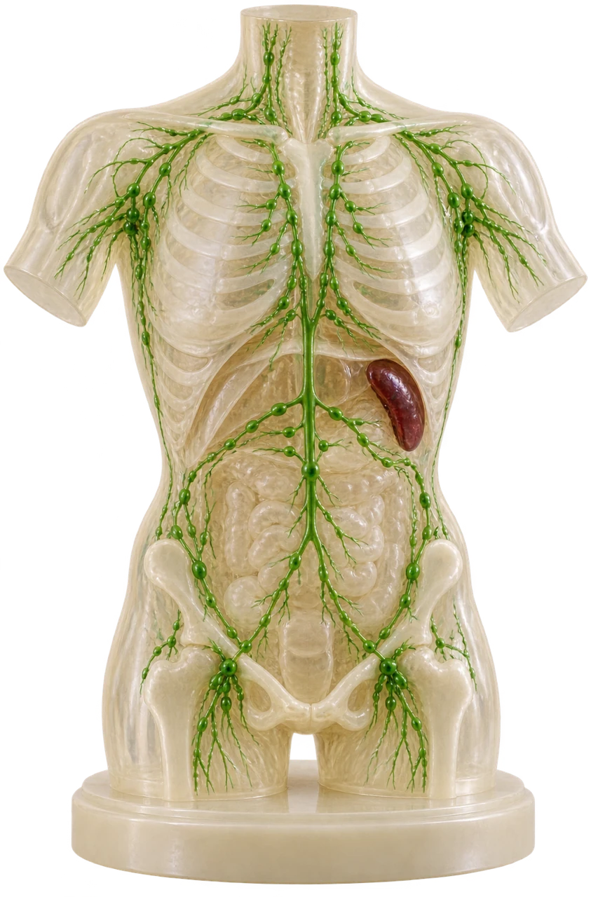

A learner notices a tender lump in the neck during a sore throat. The clinical note says “cervical lymphadenopathy”. What does the term actually tell you?
MEDLEX / CLINICAL TEAL
Lymphatic & immune systems
Interactive lesson31 slides · explore, recall, explain
 MedLexTHE LANGUAGE OF MEDICINE
MedLexTHE LANGUAGE OF MEDICINE Healthcare Crown Academy
Healthcare Crown AcademyMEDLEX / BATCH 03
Lymphatic & immune
systems
Learn the words, trace the relationships and explain the clinical meaning with precision.
31 slidesExplore · recall · applyClinical Teal

01 / The hook
A small cut. A swollen node.
A learner notices a tender lump in the neck during a sore throat. The clinical note says “cervical lymphadenopathy”. What does the term actually tell you?
02 / Learning route
What you will be able to do
Explore the detail panels. Recall the meaning. Explain the distinction.
01 · Decode
Identify key roots, combining forms, prefixes and suffixes.
02 · Locate
Connect lymphatic organs and fluid flow with their names.
03 · Distinguish
Explain innate, adaptive, active and passive immunity.
04 · Apply
Translate clinical terms and justify answers in short cases.
Medical terminology · Lymphatic & immune systems · 3 / 31
03 / Word-building toolkit
The colour code
A medical term becomes easier when its parts have a job.
04 / Click each card
The anatomy roots
Explore the detail panels. Recall the meaning. Explain the distinction.
05 / Click each card
The defence roots
Explore the detail panels. Recall the meaning. Explain the distinction.
06 / Compare and decode
Suffixes change the story
Explore the detail panels. Recall the meaning. Explain the distinction.
-itis · inflammation
lymphadenitis = inflammation of a lymph node.
-pathy · disease / abnormality
lymphadenopathy = disease or abnormality of lymph nodes, often enlargement.
-megaly · enlargement
splenomegaly = enlargement of the spleen.
-ectomy · surgical removal
splenectomy = surgical removal of the spleen.
-penia · deficiency / decrease
lymphopenia = reduced lymphocyte count.
-osis · condition / process
phagocytosis = the process of cellular engulfment.
Medical terminology · Lymphatic & immune systems · 7 / 31
07 / Worked examples
The combining vowel rule
Keep the combining vowel before a suffix that starts with a consonant: splen/o/megaly.
Keep the combining vowel before a suffix that starts with a consonant: splen/o/megaly.
Usually drop the combining vowel before a suffix that starts with a vowel: splen/ectomy.
Medical terminology · Lymphatic & immune systems · 8 / 31
08 / Retrieval practice
Checkpoint: decode the ending
Explore the detail panels. Recall the meaning. Explain the distinction.
09 / Anatomy meets function
One network, several jobs
Explore the detail panels. Recall the meaning. Explain the distinction.
Return tissue fluid
Excess interstitial fluid enters lymphatic capillaries and returns to the venous circulation.
Transport absorbed fats
Intestinal lacteals carry lipid-rich lymph called chyle.
Support immune surveillance
Lymph carries antigens and immune cells to sites where immune responses can develop.
Medical terminology · Lymphatic & immune systems · 10 / 31
10 / Animated flow
The journey of lymph
Explore the detail panels. Recall the meaning. Explain the distinction.
Tissue spaces
Interstitial fluid surrounds cells.
2Lymph capillaries
Fluid becomes lymph when it enters.
3Vessels & nodes
Valves support one-way transport.
4Ducts & veins
Lymph returns near the neck.
Medical terminology · Lymphatic & immune systems · 11 / 31
11 / Spatial reasoning
Two ducts, unequal territories
Explore the detail panels. Recall the meaning. Explain the distinction.
Right lymphatic duct
Drains the right side of the head and neck, right upper limb and right side of the thorax.
Thoracic duct
Drains the rest of the body, including BOTH lower limbs.
Medical terminology · Lymphatic & immune systems · 12 / 31
Source desk
[5] ↗12 / Interactive atlas
Where the structures sit
Explore the detail panels. Recall the meaning. Explain the distinction.
Original teaching schematic. Front view, not to scale.
Medical terminology · Lymphatic & immune systems · 13 / 31
Map key
Cervical nodesThymusAxillary nodesSpleenInguinal nodesBone marrowPatient left12A / Source illustration
The whole-body view
Locate each structure before checking its function.
Locate each structure before checking its function.
Find the spleen
Look in the upper left abdomen of the patient, on your right in a front view.
Find the thymus
Look behind the upper breastbone.
Find the nodes
Compare axillary and inguinal regions.
Illustration: NIH MedlinePlus Magazine, “Immune System”, 11 April 2023. Click image to enlarge.
Medical terminology · Lymphatic & immune systems · 14 / 31
13 / A coordinated response
Meet the immune cells
Explore the detail panels. Recall the meaning. Explain the distinction.
Neutrophil
An innate phagocyte important in early responses to many infections.
Macrophage
Engulfs material and helps coordinate responses through signals and antigen presentation.
Dendritic cell
Captures antigen and is especially important in activating naïve T cells.
B lymphocyte
Can differentiate into antibody-secreting plasma cells and memory cells.
T lymphocyte
Helper, cytotoxic and regulatory cells perform different roles.
Natural killer cell
An innate lymphocyte that can kill infected or abnormal cells.
Medical terminology · Lymphatic & immune systems · 15 / 31
14 / Compare the systems
Innate & adaptive immunity
Explore the detail panels. Recall the meaning. Explain the distinction.
| Feature | Innate | Adaptive |
|---|---|---|
| Recognition | Shared patterns and danger signals | Highly specific antigen receptors |
| Initial response | Usually rapid | Often takes days to develop fully |
| Examples | Barriers, phagocytes, NK cells, complement | B cells, T cells, antibodies |
| Memory | No classical antigen-specific memory | Antigen-specific immune memory |
Medical terminology · Lymphatic & immune systems · 16 / 31
15 / Essential vocabulary
Antigen ≠ antibody
Explore the detail panels. Recall the meaning. Explain the distinction.
16 / Click through the sequence
Recognition becomes a response
Explore the detail panels. Recall the meaning. Explain the distinction.
17 / Immunoglobulin vocabulary
The antibody families
Explore the detail panels. Recall the meaning. Explain the distinction.
IgG
Major immunoglobulin in blood. Can cross the placenta.
IgA
Important at mucosal surfaces and in secretions, including human milk.
IgM
Often the first antibody class secreted during a primary response.
IgE
Associated with immediate allergic responses and defence against some parasites.
IgD
Functions mainly as a receptor on naïve B cells.
Medical terminology · Lymphatic & immune systems · 19 / 31
18 / Who makes the protection?
Active or passive?
Explore the detail panels. Recall the meaning. Explain the distinction.
Active immunity
The person’s own immune system responds. Examples: infection or vaccination. Memory may develop.
Passive immunity
Preformed antibodies transfer to the person. Examples: placental IgG or administered immune globulin. Protection is temporary.
Medical terminology · Lymphatic & immune systems · 20 / 31
Source desk
[7] ↗19 / Lymphatic disorders
When lymph transport changes
Explore the detail panels. Recall the meaning. Explain the distinction.
Lymphadenopathy
Abnormal lymph nodes, often enlarged. This is a finding with multiple possible causes.
Lymphadenitis
Inflammation of lymph nodes. Infection is a common cause.
Lymphangitis
Inflammation of lymphatic vessels.
Lymphoedema / lymphedema
Tissue swelling related to impaired lymph drainage. Primary and secondary forms occur.
Medical terminology · Lymphatic & immune systems · 21 / 31
20 / Immune disorders
When immune function changes
Explore the detail panels. Recall the meaning. Explain the distinction.
Hypersensitivity
An immune response that causes tissue injury. Allergy is one category.
Autoimmunity
An immune response directed against the body’s own components.
Immunodeficiency
Insufficient immune function. It can be inherited or acquired.
Immunosuppression
Reduced immune activity, which may result from disease or treatment.
Medical terminology · Lymphatic & immune systems · 22 / 31
21 / Oncology vocabulary
Lymphoma: a name needs context
Lymphoma is a cancer arising in lymphocytes. The suffix -oma means tumour, but the complete diagnosis carries more meaning than its parts.
Lymphoma is a cancer arising in lymphocytes. The suffix -oma means tumour, but the complete diagnosis carries more meaning than its parts.
Hodgkin lymphoma
A group of lymphomas. Classical Hodgkin lymphoma characteristically contains Hodgkin/Reed–Sternberg cells.
Non-Hodgkin lymphoma
An umbrella term for many distinct B-cell, T-cell and NK-cell lymphomas.
Medical terminology · Lymphatic & immune systems · 23 / 31
Source desk
[10] ↗22 / Diagnostic language
Tests name what they measure
Explore the detail panels. Recall the meaning. Explain the distinction.
CBC with differential
Complete blood count with a breakdown of white-cell types. It is not a stand-alone measure of all immune function.
Serology
Testing serum for markers such as antibodies or antigens.
Flow cytometry
Analyses cell features using labelled markers. It can identify immune-cell populations.
Lymph node biopsy
Samples node tissue for examination. The sampling method depends on the clinical question.
Medical terminology · Lymphatic & immune systems · 24 / 31
23 / Clinical language
Procedures & treatment terms
Explore the detail panels. Recall the meaning. Explain the distinction.
Lymphadenectomy
Surgical removal of lymph nodes.
Splenectomy
Surgical removal of the spleen.
Lymphangiography
Imaging of lymphatic vessels.
Immunotherapy
Treatment that modifies immune responses. Its mechanism depends on the therapy.
Immunosuppressant
A medicine that reduces immune activity.
Allergist / immunologist
A specialist in allergic and immune disorders.
Medical terminology · Lymphatic & immune systems · 25 / 31
24 / Case application
Translate the clinical note
Fictional note: “Following axillary lymphadenectomy, the patient developed ipsilateral arm lymphoedema.”
Fictional note: “Following axillary lymphadenectomy, the patient developed ipsilateral arm lymphoedema.”
Medical terminology · Lymphatic & immune systems · 26 / 31
25 / Clinical reasoning
Choose the precise term
Explore the detail panels. Recall the meaning. Explain the distinction.
26 / Word laboratory
Build, then explain
Explore the detail panels. Recall the meaning. Explain the distinction.
27 / Explain your choices
Final retrieval check
Explore the detail panels. Recall the meaning. Explain the distinction.
28 / Consolidation
What to carry forward
After the lesson: retrieve five terms tomorrow, then revisit the ones you missed later in the week.
Decode
Read the suffix, identify the root, then confirm the full meaning.
Locate
Nodes filter lymph. The spleen filters blood. The thymus supports T-cell maturation.
Distinguish
Antigen and antibody differ. Active and passive immunity differ.
Apply
Use the precise term and avoid inferring a cause from a finding alone.
After the lesson: retrieve five terms tomorrow, then revisit the ones you missed later in the week.
Medical terminology · Lymphatic & immune systems · 30 / 31
29 / References & currency
Sources you can open
Explore the detail panels. Recall the meaning. Explain the distinction.
Medical Terminology, Chapter 11: Lymphatic & Immune Systems Terminology (2024).
MedlinePlus: Appendix A, Word Parts and What They Mean.
NCI Dictionary: lymphadenopathy.
MedlinePlus: Lymph system. Reviewed 23 July 2024.
Anatomy and Physiology 2e (2022), Chapter 21.1 and Chapter Review.
MedlinePlus: Immune response.
Centers for Disease Control and Prevention
Pink Book: Principles of Vaccination. Web page dated 22 March 2024. Principles only.
NCI Dictionary: lymphedema.
MedlinePlus: Immune System and Disorders.
NCI Dictionary: lymphoma.
NCI Dictionary: immunotherapy.
Schlüter T, van Elsas Y, Priem B, Ziogas A, Netea MG
Trained immunity: induction of an inflammatory memory in disease. Cell Research (2025) 35:792–802. doi:10.1038/s41422-025-01171-y.
Original lesson wording, activities and teaching diagrams. Schematic and 3D-style visuals are conceptual, not diagnostic images.
Medical terminology · Lymphatic & immune systems · 31 / 31
ARTWORK & ATTRIBUTION
Teaching imagery combines generated raster artwork and symbols from the supplied Health Icons asset packs. Models and scenes are conceptual teaching aids. They are not diagnostic diagrams or patient images. Source desks retain attribution to OpenStax, Open RN and the clinical publishers used in the original lessons. No source endorsement is implied.
Explore · recall · explain
01 / 31
ONE ANNOTATION STANDARD
Pointer · interact with the lesson← → Navigate · A Tools · F Focus · Esc Exit
LESSON 02 / 08 · 31 SLIDESNext lesson: Haematology →